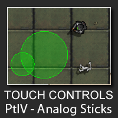
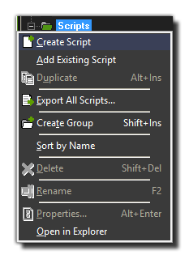
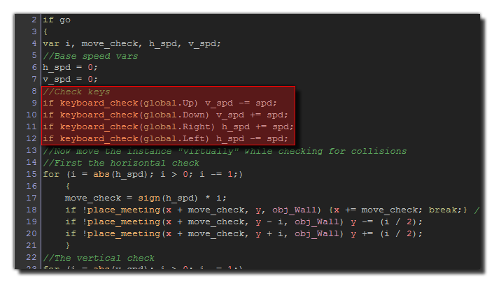
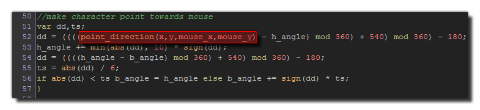
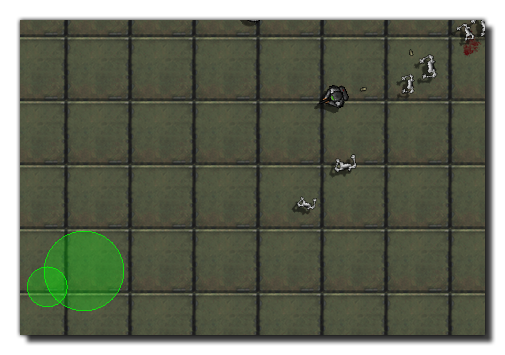
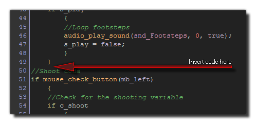

The previous tutorial in this series showed how to use "pinching" on a touch screen device to zoom and rotate a view. If you went through it correctly, then you have a little game with some virtual keys to
move the character and a moving view, but you will have noticed that the controls are not very good! Virtual keys are fine for some games, like platformers for example, but for others you really need the freedom
of movement that an analogue joystick or gamepad gives.
In this tutorial we are going to add analogue-style controls to the game to make the movement and game play more natural and fluid. Since this is a top-down shooting game, we will add two joysticks to it - one to
control the player movement, and another to control the player shooting direction, so that with the left and right thumbs you can move and shoot easily.
Scripts
Before getting started with the object codes for this, we need to create two scripts for our game. these scripts are necessary due to the fact that we will be drawing our virtual analogue controllers onto the GUI
layer of the screen, and so we need to convert raw mouse positions into relative gui positions. This is because in our test game the GUI layer is probably not the same resolution as the actual
screen of the device that will be testing it.
So create a new script resource by right-clicking on the Scripts folder from the Resource Tree and selecting "Create Script".

Call this new script scr_mouse_gui_x and add the following:
if os_type == os_windows || os_type == os_linux || os_type == os_macosx
{
return display_get_gui_width() * (argument0 / window_get_width());
}
else
{
return display_get_gui_width() * (argument0 / display_get_width());
}
Now create another script and call it scr_mouse_gui_y and add this:
if os_type == os_windows || os_type == os_linux || os_type == os_macosx
{
return display_get_gui_height() * (argument0 / window_get_height());
}
else
{
return display_get_gui_height() * (argument0 / display_get_height());
}
These two scripts can now be called like regular functions to get the GUI layer x and y coordinates from the raw mouse position in our game. Note that we have OS checks in there, since on Windows and other
desktop targets we need to use the window resolution, while on devices we need the display resolution.
Movement
With those scripts ready, we can now move on to making the player move. So open up obj_Player now.
We are going to have to create a number of new variables for this object, and they will be used to do the calculations necessary to translate the mouse position into movement, as well as for drawing the controls
on the screen (which for simplicity we are also going to do in this object).
Open up the Create Event and add the following:
gui_x[0] = 64;
gui_y[0] = (display_get_gui_height() - 64);
gui_x[1] = (display_get_gui_width() - 64);
gui_y[1] = (display_get_gui_height() - 64);
stick_x[0] = gui_x[0];
stick_y[0] = gui_y[0];
stick_x[1] = gui_x[1];
stick_y[1] = gui_y[1];
st_pressed[0] = -1;
st_pressed[1] = -1;
st_radius = 40;
vdir = 0;
As you can see, we have created a couple of arrays to hold some
x and y coordinates. We could use simple variables and make them all different for each value we wish to store, but often it is easier to code an array to "group" multiple values under the same variable. In this case
we will use the array [0] for the left stick, and array [1] for the right stick (which we will add later in this tutorial).
Let's go through those variables one at a time so that you can see what's going on and get an idea of how everything will hold together:
- gui_x/y: These arrays hold the position on the GUI layer that we will consider as the "center" position. They will be used to calculate movement and we are going to use them to draw the base images
of the analogue stick on the screen.
- stick_x/y: This array will hold the position of the analogue stick while it is being moved by the player, as well as for drawing the stick "head" on the screen.
- st_pressed: We will use this variable to check for a touch on the screen to use the analogue stick.
- st_radius: This is the radius (in pixels) of the analogue stick base, and will be used to control the maximum movement of the stick from the base position.
- vdir: We also want the stick movement to control the direction that the player is facing, so this will be used to set the image angle only when the stick is being used.
With that done, you need to open up the Step Event of the object and remove a few lines of code, specifically those shown in the image below:

That removes the keyboard control, and we can now add into the same position our analog stick controls. We will do this in two parts, with the first part of the code detecting which finger is over the
controller and then storing that value in our array "st_pressed". If the screen is not being touched (at the stick position) then this array will hold the value of -1. The second part of the code will then be
used to get the position of any detected touch relative to the base GUI position (as defined in the array "gui_x/y") and set the player horizontal and vertical speed values.
So let's add that first part of the code into our Step Event now (in the same place that you previously removed the keyboard code):
stick_x[0] = gui_x[0];
stick_y[0] = gui_y[0];
if st_pressed[0] = -1
{
for (i = 0; i < 5; i++;)
{
if device_mouse_check_button(i, mb_left)
{
var tx, ty;
tx = scr_mouse_gui_x(device_mouse_raw_x(i));
ty = scr_mouse_gui_y(device_mouse_raw_y(i));
if point_distance(tx, ty, gui_x[0], gui_y[0]) < st_radius
{
if st_pressed[1] != i
{
st_pressed[0] = i;
break;
}
}
}
}
}
We now have a code block that, if there is no current touch on the left stick, loops through the five possible touch points and checks to see if there is a finger there (making sure that it is not the same finger as the
one using the shoot controller). If there is a touch within the given radius from the base gui x/y point, that touch is detected and the "finger" number stored. Note that it uses our scripts to convert the "raw" mouse
position on the screen into the correct GUI layer position.
The second code block is slightly more complicated and should be placed directly below the one above. We will break it into parts, and explain each bit as we go along. Start the code block with this:
if device_mouse_check_button(st_pressed[0], mb_left)
{
var spd, vdist, mx, my;
mx = scr_mouse_gui_x(device_mouse_raw_x(st_pressed[0]));
my = scr_mouse_gui_y(device_mouse_raw_y(st_pressed[0]));
We first check to see if the previously stored "finger" is still touching the screen. If it is, we prepare some local variables and then get the mouse position on the GUI layer. Next we need to put:
vdist = min(st_radius, point_distance(mx, my, gui_x[0], gui_y[0]));
vdir = point_direction(gui_x[0], gui_y[0], mx, my);
These two lines capture the distance that the stick has been moved, limiting it to the radius value we set in the Create Event, and also gets the direction that it has been moved in. Both these
values will now be used to calculate the movement speed:
spd = min(b_spd, vdist / 10);
h_spd = lengthdir_x(spd, vdir);
v_spd = lengthdir_y(spd, vdir);
This sets the local "spd" variable to a value that is limited to a maximum speed set by the base speed ("b_spd"), and then uses this value to get the component horizontal and vertical speed from the speed/direction
vector. These two values are then used (as they were before for the keyboard) in the movement code of this object.
Finally, to finish this code block we have this:
stick_x[0] = gui_x[0] + lengthdir_x(vdist, vdir);
stick_y[0] = gui_y[0] + lengthdir_y(vdist, vdir);
}
else st_pressed[0] = -1
This sets the "stick" array to hold the current position for drawing the stick "head" in the Draw GUI event, and it also resets the "st_pressed" variable to -1 if the player lifts the finger being used from the
screen.
One final change needs to be made here, and that is to the code that changes the image angles of the body. Simply change the point_direction() function in the code (highlighted below) to be the instance
variable "vdir", as this will make the player point in the correct direction when the stick is being moved.

Before testing this, we need to add a Draw GUI event to draw the stick on the screen, so add one now, open up a code action, and add the following:
draw_set_alpha(0.75);
draw_circle_color(gui_x[0], gui_y[0], st_radius, c_lime, c_lime, true);
draw_circle_color(stick_x[0], stick_y[0], 20, c_lime, c_lime, true);
draw_circle_color(gui_x[1], gui_y[1], st_radius, c_lime, c_lime, true);
draw_circle_color(stick_x[1], stick_y[1], 20, c_lime, c_lime, true);
draw_set_alpha(0.25);
draw_circle_color(gui_x[0], gui_y[0], st_radius, c_lime, c_lime, false);
draw_circle_color(stick_x[0], stick_y[0], 20, c_lime, c_lime, false);
draw_circle_color(gui_x[1], gui_y[1], st_radius, c_lime, c_lime, false);
draw_circle_color(stick_x[1], stick_y[1], 20, c_lime, c_lime, false);
draw_set_alpha(1);
You can draw the stick in any way you choose, but for ease of programming we are going to draw simple shapes only. Note that we also draw the second stick (for shooting) although it is useless just now. You can test
the game now, and (even on Windows) touching the analogue stick control at the bottom of the screen should make the player move and turn.

Shooting
Now that we have an analogue stick for moving, we should add one in for shooting. This will permit the player to move in one direction and to shoot in another.
The initial code is exactly the same as that for the left stick, in that it has to loop through the five possible "fingers" to see which is being pressed and store that value in the "st_pressed[1]" array. So, we need to insert
that check into our code, after the movement code block, but before the shooting.

The code to add here is as follows:
stick_x[1] = gui_x[1]
stick_x[1] = gui_x[1]
if st_pressed[1] = -1
{
for (i = 0; i < 5; i++;)
{
if device_mouse_check_button(i, mb_left)
{
var tx, ty;
tx = scr_mouse_gui_x(device_mouse_raw_x(i));
ty = scr_mouse_gui_y(device_mouse_raw_y(i));
if point_distance(tx, ty, gui_x[1], gui_y[1]) < st_radius
{
if st_pressed[0] != i
{
st_pressed[1] = i;
break;
}
}
}
}
}
Now we need to change the actual shooting code directly after this to accept the touch on the stick and set the correct angles for shooting and drawing. We will be replacing the initial
mouse_check_button_check function with a device specific one and setting the stick array values like this:
if device_mouse_check_button(st_pressed[1], mb_left)
{
var mx, my;
mx = scr_mouse_gui_x(device_mouse_raw_x(st_pressed[1]));
my = scr_mouse_gui_y(device_mouse_raw_y(st_pressed[1]));
vdist = min(st_radius, point_distance(mx, my, gui_x[1], gui_y[1]));
vdir = point_direction(gui_x[1], gui_y[1], mx, my);
stick_x[1] = gui_x[1] + lengthdir_x(vdist, vdir);
stick_y[1] = gui_y[1] + lengthdir_y(vdist, vdir);
if c_shoot
{
//the rest of the code as it is here
}
}
else st_pressed[1] = -1;
Test the game now and you should see that the left control moves the player and the right one makes him turn and shoot. Congratulations! You now have a working game with analogue style stick controls, which
completes this short series of tutorials on Touch Controls.
© Copyright YoYo Games Ltd. 2015 All Rights Reserved